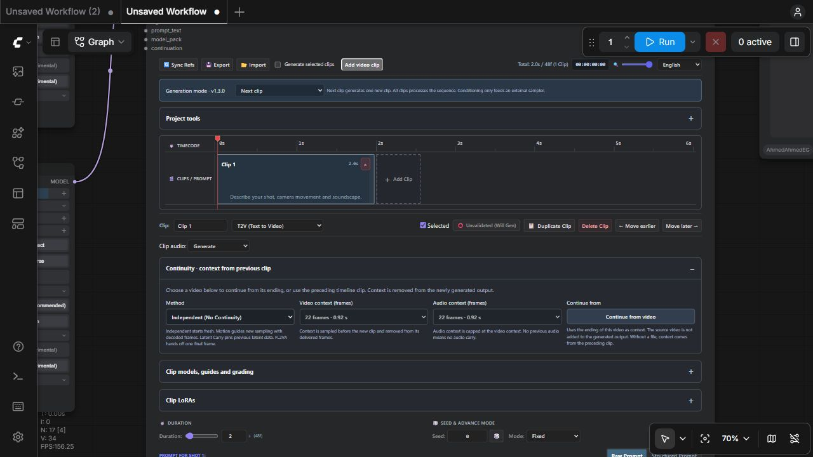
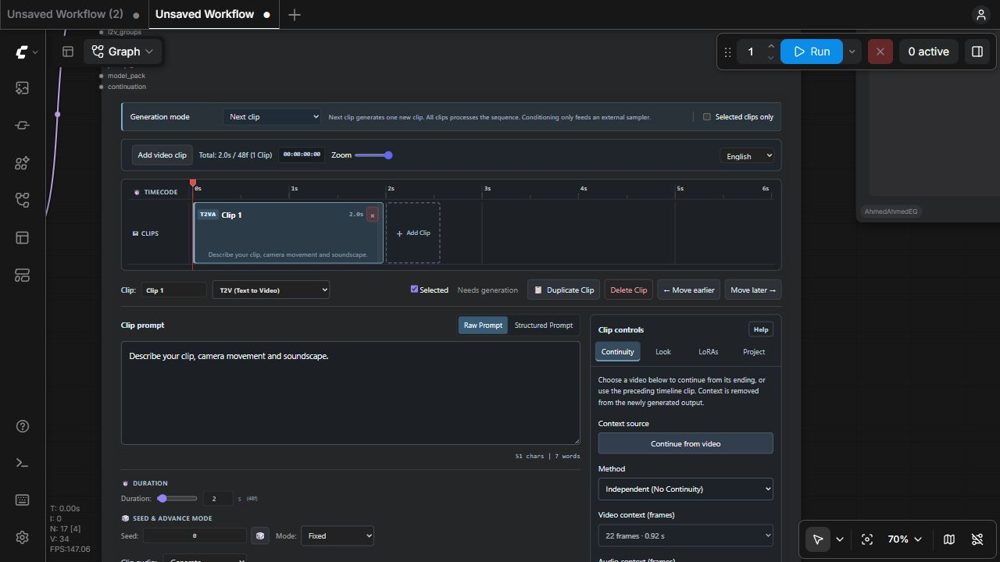

MiniMax H3 Master Node
Authors and generates a timeline of MiniMax H3 clips with video and audio.
Use it when: Use this as the centre of a normal workflow.
In plain language
This is where you direct the video. Each timeline clip has a prompt, duration, seed and optional references. The Master runs the AI and joins the completed clips. Write in the left-hand editing area; choose Continuity, Look, LoRAs or Project on the right when you need those controls.

This node in the starter workflow. Read what every box does.
Connections
Load Diffusion Model (FL2VA) → fl2va_model
Load Diffusion Model (REF2VA) → ref2va_model
Load CLIP → clip; video Load VAE → video_vae; audio Load VAE → audio_vae
Director Settings config → config
project_state → Smart Preview; optional final export: images + audio + fps → Create Video → Save VideoGeneration mode: what a Run actually does
This is a scheduling decision for the Master, not a video model and not a playback setting. Generation mode is the prominent dropdown at the top of the Master. When you press ComfyUI Run, the Master reads its timeline state, walks the ordered clips, resolves references, builds conditioning, then either samples a new take or restores usable cached data. The separate Smart Preview reads completed take caches afterwards.
| Choice | Execution | Choose it for |
|---|---|---|
| Next clip | Internally selects execution_mode=All-in-One Generation and run_mode=clip_by_clip. The Master can restore approved predecessors, but stops after sampling one new clip. A usable approved cache does not consume the new-clip allowance. | Build a sequence incrementally. Generate, inspect, approve a take, then run again for its successor. |
| All clips | Selects run_mode=full_batch. The Master processes the ordered timeline in one call; approved, matching caches may be restored while other eligible clips are sampled. | A complete batch after you have checked prompts, references and continuity. This can take much longer than one clip. |
| Conditioning only | Selects execution_mode=Conditioning Guide Output. It calls the native H3 conditioning builder but bypasses internal diffusion sampling. The useful outputs are positive, latent and resolved_prompt; the returned latent is a prepared sampling input, not a completed take. | Advanced graphs that supply an external sampler. Do not select this to watch a finished video in Smart Preview. |
Worked example: you have clips A, B and C. In Next clip, a first run generates A. Inspect it and validate it. A second run can restore A and generate B; a third can restore A and B and generate C. If A remains unvalidated, another run may sample A again. Next clip means one newly sampled clip per execution, not “automatically advance the playhead.” Changing A's effective inputs invalidates its matching cache, and chained successors can also become stale.
The Master’s Selected clips only checkbox adds a separate eligibility restriction. An unselected clip must have a usable matching cache or a supported original-source range; it is not silently replaced with an empty placeholder. “All clips” does not override that explicit selection restriction. The player’s Latest clip/Full video choice affects downloads, not this scheduling.
Continuity: what information crosses the seam
Independent clips each begin without the preceding clip’s generated context. A chained clip receives information from its predecessor to encourage the same motion, subject and sound to continue. This is conditioning and sampling state, not merely a crossfade between finished MP4 files. A context prefix can be sampled or pinned inside the new latent, then removed from the delivered sequence so the viewer does not see the same time twice.
| Choice | Mechanism in this pack | Tradeoff |
|---|---|---|
| Independent (No Continuity) | No previous-clip context is injected. Per-clip keyframes and references still apply. | Use for cuts, different scenes and the first test. Identity can change unless you provide references. |
| Motion Context (Chained) | The Master takes an aligned range of decoded tail frames and corresponding audio, places them at the beginning as H3 guides and adds room for that prefix in the requested generation length. | Encourages continuation of motion and appearance. More context increases conditioning work and can constrain a deliberate change of action. |
| Latent Carry (Pinned) | Uses apply_latent_continue to carry audiovisual latent context and noise masks into the next sample. It preserves native temporal phase, can trim the previous tail at the seam, and pins/remasks the prefix during sampling. | Useful for stronger continuity. It depends on a compatible previous AV latent and correct seam phase; it is more restrictive than using unrelated image references. |
| FL2VA Tail Handoff | The general continuity path supplies the previous last frame as an opening keyframe. It does not enter the multi-frame Motion Context/Latent Carry prefix branch. | A simpler boundary handoff with less motion history. An explicit opening frame or task-specific references may override the automatically selected image. |
Continuity applies only when the current clip permits chaining and a usable predecessor exists. Image Inpaint and explicit video-source editing follow their own rules. I2VA with an explicit opening image uses that image; L2VA is a closing-frame task. REF2VA can receive previous visual/audio material when local references are absent, while multi-frame context is handled separately. See the Master’s mode and reference rules rather than assuming every task uses the same seam mechanism.
Context length is a count of video frames
context_length is measured in decoded video frames at 24 fps. It is unrelated to an LLM token limit and is not a number of diffusion steps. The choices follow the H3 temporal grid: 5, 22, 39 and 56. Their durations are approximately 0.208, 0.917, 1.625 and 2.333 seconds. The Master limits the requested context to the available tail and aligns it down; a short predecessor cannot supply 56 real frames.
For a five-second continuation with 22 context frames, the model works on an aligned sequence containing both the visible new material and its context prefix. The delivered frames have the prefix removed during assembly. Consequently, timeline duration, native aligned generation length and final delivered length are related but not interchangeable. A longer context consumes more computation and can preserve unwanted previous motion. Begin with 22 for an ordinary continuation, 5 for a lighter handoff, and Independent for a hard scene cut.
Continuity belongs to each clip
Click a clip, then use its open Continuity section. The method is saved as continuity_mode, video frames as context_length, and audio frames as audio_context_length. These are authoring fields in the Master's timeline JSON. They override the legacy configuration fallback, so one clip can be independent while its successor uses motion guidance or latent carry.
Video context choices are 5, 22, 39 or 56 frames at 24 fps. Audio can be Off or use those same frame-time lengths, capped at the usable video context. Motion Context passes decoded tail media as native H3 guides; Latent Carry calls the continuation adapter with separate audio pin and audio-context settings. Turning audio off stops inherited audio guidance/pinning; it does not mute newly generated clip audio. Latent Carry exposes seam redraw strength from 0 to 1. FL2VA Tail Handoff borrows a single visual anchor and no audio prefix.
Blue V and purple A overlays extend left from the new clip into its predecessor and label the borrowed frame counts. They visualize context, not an extra output clip or a crossfade that lengthens the delivered sequence. The initial display estimates availability from the authored predecessor duration; H3 grid rounding and decoded media can change the actual count. Source ranges, locked clips and inpainting do not borrow a generated context prefix. The first clip requires an explicit continuation checkpoint if it needs previous context.
Each completed clip now retains up to 56 decoded tail frames and the corresponding audio; the next clip chooses its context length. This prevents the previous clip's own seam choice from silently limiting its successor. Effective per-clip video/audio context settings participate in cache fingerprints. Change a method or context length to invalidate the affected take and inspect chained successors before revalidating.

Finding project and clip features
Each feature has one configuration owner. Director Settings owns canvas dimensions, canvas policy and sampling. Reference Pack owns media and RefMod files and their names; the Master only assigns those assets to clips. Prompt Forge and Review / Apply Prompt Draft own drafting and review. Smart Preview owns playback scope. The Master owns the timeline, clip prompts, continuity and project state. Its editing workspace keeps the prompt, duration, seed and clip audio on the left. The right-hand tool panel has Continuity, Look, LoRAs and Project tabs; Generation mode stays above the timeline.
Writing area and tool panel
Select a clip in the timeline. Its name, task mode, approval/reuse status and edit actions appear directly below the timeline. Clip prompt is the primary writing surface on the left. Duration, seed, seed-advance behavior and clip audio remain below it, independently of the selected tool tab. Raw and Structured are alternative editors for the same clip prompt. Structured mode exposes its subject, action and sound fields inside the writing area.
| Tab | Controls it owns | Scope |
|---|---|---|
| Continuity | Context source, video file, continuity method, video/audio context lengths and applicable seam redraw strength. | The selected generated clip. Source-edit/inpaint clips disable this tab. |
| Look | Named model override, interior reference anchors and exposure/contrast/saturation. | The selected clip. |
| LoRAs | Compatible installed LoRA selection, strength and enable state. | The selected clip. |
| Project | Shared prompt, prompt placement, audio finishing, portable archives, cache clearing and recovery. | The entire project; it remains a single configuration surface. |
Choose a tab by clicking its label, or focus a tab and use Left/Right arrows, Home or End. A tab change preserves authored values and moves no prompt/duration/seed controls. Only the tool body scrolls when it contains many fields. Help toggles the longer field explanations; it does not hide configuration controls. Project configuration has one entry point: the Project tab. Saved workflow data remains unchanged by the selected tab or Help visibility: these are temporary interface preferences.
Approved · reuse take marks the clip as validated; the backend still checks the cache fingerprint before reusing it. Needs generation means approval is off, not that a render is already queued. The actual execution scheduling comes from Generation mode and the selected-clip restriction, not the sidebar tab.
From a timeline to a completed take
The Master is an audiovisual generation controller. Its editor stores a JSON timeline, but actual model execution happens on the ComfyUI server. One execution resolves the timeline, chooses the model family for each task, resolves each clip's selected references and seed, builds native H3 conditioning, optionally applies Semantic Bridge, samples with the selected schedule, optionally refines, decodes, performs applicable grading/face work and saves the take. It then assembles the processed frames/audio and reports project state.
The editor does not contain model weights. Model loaders produce MODEL, CLIP and VAE objects; configuration nodes produce dictionaries describing requested work. The Master consumes those objects. It is not an output sink: connect an output node, such as Smart Preview or an exporter, so ComfyUI schedules its execution. Connecting a preview does not turn a prepared latent into a movie when Generation mode is Conditioning only.
Timeline + Settings + Reference Pack + model family
→ reference selection and task validation
→ prompt compilation and native conditioning
→ optional semantic rewrite / continuity masks
→ sampling or approved-cache restoration
→ optional latent refinement → VAE decode → grading / FaceRefine
→ cached take + project state → Smart Preview or final exporterTask modes and which model to connect
| Editor task | Family | Role of selected media |
|---|---|---|
| T2V / T2VA | FL2VA | Text-only generation. Do not assign image/video/audio references to a text-only clip. |
| I2V / I2VA | FL2VA | An assigned image defines the opening frame. The prompt describes what happens after that frame. |
| FL2V / FL2VA | FL2VA | Two images define first and last frames in selection order. With continuity and one local image, that image can act as the ending keyframe. |
| L2VA | FL2VA | One selected image defines the ending frame. It is not the same constraint as I2V. |
| REF2VA | REF2VA | Selected pictures, videos, audio and supported RefMods guide subjects, appearance, movement or sound through reference conditioning. |
| V2V / RV2V | REF2VA | A real selected source-video range is edited. Source coordinates define the visible edit interval; they are not a request to append a generic continuation prefix. |
| Image Inpaint | FL2VA | Exactly one image; a single-image editing task. It is not a multi-second video mode. |
Use fl2va_model and ref2va_model to keep both families connected. They are lazy inputs, so an unused family need not be executed merely because its cable exists. model is a general fallback. A named per-clip model override in model_pack can replace the family choice. Connect a compatible H3 model: the socket type MODEL alone does not prove that a completely different architecture is suitable.
Pool membership, clip assignment and prompt tokens
Reference Pack is the authoring source for new references. Connecting four images makes four images available; it does not assign all four to every clip. Select the current clip, then select the pool items it should use. This avoids accidental cross-clip contamination. Friendly names identify assets in the editor; stable IDs identify graph slots; native prompt tokens identify their ordered positions in this clip's conditioning.
If Alice is pool image_4 and Background is pool image_1, but you assign Alice first and Background second, the visible token mapping must be read for that clip. <Picture 1> means its first assigned picture, not always global image_1. Renaming Alice does not change the native token grammar. Reordering assignments can change token numbering, so review the prompt after removing or rearranging media. Buttons only appear for real assigned references. The editor may preserve already typed text; it does not invent a real Video 1 because that string occurs in a prompt.
The pool can be chained to hold more assets than one node's slots. The per-clip validator still imposes reference counts and durations. REF2VA checks up to 9 images, 3 videos, 3 audios and 12 total reference items, with RefMods counted in the total; audio-only reference use requires visual material. Inspect the task's validation message rather than assuming a large pool removes model limits. Keyframe tasks use stricter image-only rules.
Raw text, structured prompts and shared prompt text
Raw Prompt is an ordinary clip description. Explain action, camera movement, scene and sound, then insert only tokens corresponding to assigned media. Structured Prompt exposes H3 sections: subject_definitions, summary, retention_analysis, detailed_description, overall_soundscape and non_diegetic_music. These are compiled into labeled text. The format does not load references automatically and is not a guarantee of stronger adherence.
The per-clip Raw/Structured choice controls compilation; there is no competing global prompt-format widget. prompt_text is an advanced connected STRING input for graph-supplied, newline-separated prompts; blank lines are ignored. Group packers can supply clip prompts as an alternative to purely editor-authored clips. Review the resolved_prompt output to see what was actually sent to the final processed clip, including task scaffolding and RefMod alias translation. ComfyUI's hidden PROMPT input is the execution graph, not user prompt text.
For the target video, <Picture 1> defines Alice's appearance.
Alice turns toward the window, then walks out of frame.
The camera follows slowly. Soft footsteps and distant traffic.Start with one subject and one clear action. A structured prompt with contradictory retention and action requests can still confuse generation. Do not paste Video/Audio tokens when no matching media is assigned, and do not mistake the token's display label for a filesystem path.
Editing clips and source ranges
Click a clip to inspect it. Drag its body to reorder the complete clip and associated reference lanes; drag the right edge to change duration. Move earlier/later buttons provide an explicit alternative. This is an ordered generation timeline, not a multitrack compositor with arbitrary overlapping video clips. Delete removes the authored clip from this timeline; it does not mean that all server-side take files are permanently erased.
Image, video and audio rows appear when relevant references exist. An image cover is a selected reference, not proof that a take has generated. Click reference thumbnails for a larger inspection. Source-video tasks select an existing pool video and edit a range; a locked source clip passes through the real source range instead of sampling it. Keep source sound, Generate sound and Mute have different effects. They do not select the preview scope.
Duration is requested visible time. Sampling lengths are snapped to H3's temporal grid. Changing duration, order or a chained predecessor can invalidate dependent takes. The timeline ruler uses DOM text so graph zoom does not stretch a low-resolution bitmap; its internal zoom is independent of ComfyUI canvas zoom.
Approval, cache matching and project identity
Validation marks a take as accepted for reuse, but reuse also requires a matching fingerprint and complete readable cached frames, audio and latent data. A fingerprint includes effective prompt, dimensions, duration, seed, sampling settings, media and applicable enhancement/model state. Chained clips also include upstream dependency information. “Validated” is therefore not permission to reuse a result after arbitrarily changing its inputs.
Each timeline has a project_id; each clip has an id; generated takes have revision/generation identities. Reusing a project ID deliberately accesses that project's server cache. Lightweight workflow JSON carries authoring settings and graph wiring, not all generated tensors. A portable media/project package and a server checkpoint address different needs. Export/import/reset are authoring operations; inspect what an archive contains before treating it as a complete installation backup.
Next clip restores acceptable predecessors and stops after one new sample. All clips processes the eligible sequence. Selected clips only adds selection filtering. A previous approved clip may still be needed as continuity context. Errors for missing caches or missing source ranges are meaningful: the pack does not manufacture replacement frames just to keep an export going.
Outputs: complete sequence versus last-clip state
images is the assembled IMAGE frame batch for the processed output; audio is its synchronized waveform. Assembly removes applicable continuity prefixes and standardizes mixed frame dimensions to the first output canvas. fps and frame_count describe the delivered output. The socket named video contains VHS_VIDEOINFO metadata, not a disk VIDEO or MP4 file: use images/audio/fps with Create Video or an exporter.
positive, latent and resolved_prompt describe the final processed clip, not a list of all clip states. In generation mode the latent is a sampled audiovisual latent; in Conditioning only it is the prepared latent input. status reports processing outcomes. project_state is JSON used by the separate player and cache-driven exports, containing project and clip identities rather than embedding model tensors.
The Master still assembles decoded frame batches when it executes. Latest-clip preview reduces preview encoding/network traffic; it does not eliminate all server-side decode or assembly memory. For long final projects, Project / Clip Video Export reads cached clips individually rather than requiring a new monolithic generation pass. Keep this distinction in mind when diagnosing VRAM, RAM and bandwidth separately.
Advanced inputs and optional stages
Clip models, LoRAs, guides and grading
The Clip models, guides and grading section selects a named model override, adds interior anchors and adjusts decoded color. Each anchor selects an existing pool reference and a time in seconds; the runtime converts its position to the native frame grid and adds the supported H3 guide. An anchor is not an extra timeline clip. Color controls change exposure, contrast and saturation on decoded frames; they do not change the first-pass noise schedule or load a different model.
Clip LoRAs supports up to eight enabled entries with a model strength. The pack resolves the installed LoRA file, hashes its content and clones/patches the active model for that clip using ComfyUI's loader; it does not patch CLIP in this clip-local path. Disabled/blank/zero-strength rows are omitted, and invalid/nonfinite strengths are rejected. A patch for one clip must not leak into siblings. A Turbo LoRA also needs its intended schedule: selecting a clip-local file is separate from the starter's explicit global model/steps toggle.
Seed behavior, seam overlap and audio choice
Fixed keeps the clip seed, Increment/Decrement changes it after an execution, and Randomize requests another starting seed. The serialized decimal-string representation preserves values above JavaScript's exact-integer range. Duration and seam-overlap fields describe time/context; neither is a sampling-step control. Per-clip overlap/tail choices interact with the global continuity strategy, so use the Settings explanation when choosing a boundary.
Clip audio Generate uses sampled sound, Keep source audio uses the supported source sound, and Mute creates the appropriate silent delivered interval. Keeping source audio requires an actual source with audio. Project Tools also exposes audio seam fade in milliseconds and gain matching between clips. Gain matching adjusts relative loudness; seam fades reduce boundary clicks without creating missing dialogue or a soundtrack.
Source-range editing and locks
For V2V/RV2V, choose a real pool source video and set a finite increasing start/end interval. Split into equal ranges divides that interval into authoring clips; Split at playhead uses the source player's current time; Detect scene boundaries calls source-scene analysis and uses real cuts within the range. Remove next boundary / merge requires a contiguous next range from the same file, merges prompts/reference IDs and clears approval. These operations edit the source-range timeline, not the underlying video file.
A locked source passes its real media through and blocks source-range editing/reordering. It is not a generated take that becomes permanently immune to all project changes. The inspector must remain usable without a removed upload/frame-picking control. Source handling is separate from Smart Preview's output scope.
Project tab: shared prompt, audio finishing and files
The Project tab contains settings that apply to the whole timeline. Shared prompt is added to each clip’s own prompt: prepend places it before the clip text, append places it after. For example, shared “Watercolour style” plus clip “A bird takes flight” produces both instructions in the chosen order. Inspect resolved_prompt to see what actually reaches conditioning. Changing the shared prompt can invalidate cached clips.
Audio seam fade is measured in milliseconds and fades audio at clip boundaries to reduce clicks; it does not change audio continuity conditioning. Gain matching adjusts neighbouring audio levels with bounded gain; it does not change the content of generated sound. Canvas controls are exclusively in Settings. Manual uses width/height; Original follows source dimensions; Auto uses megapixels and aspect. The connected Settings configuration takes precedence over legacy timeline canvas fields. Saved UI workflows transfer old timeline canvas policy to connected Settings on import.
Files & recovery: what each action does
| Action | What happens | When to use it |
|---|---|---|
| Clear current project cache | After confirmation, deletes generated takes/cached outputs for this project and clears approval. Input reference files remain. | Discard unusable cached renders. They cannot be recovered with the authoring-state recovery button. |
| Export with media | Downloads a portable .mmxproj archive of timeline state and available input assets, including imported/continuation videos. | Move authoring work and its input media to another server. It is not a final MP4 export or model backup. |
| Import media pack | Uploads such an archive and offers append or overwrite. Append remaps IDs and clears approval. | Restore or combine portable projects. Keep connected models/configuration appropriate to the restored project. |
| Recover saved run | Restores the latest autosaved timeline for the current project ID. | Recover authoring state after interruption. It does not recover deleted cache files or recreate a missing graph. |
| New project | Starts a fresh timeline with a new project ID. | Begin another sequence without reusing the old project’s cache identity. Export unsaved authoring work first. |
| Reset | After confirmation, resets this timeline to one default clip, retaining project identity. | Start authoring again within the same project. It does not perform a cache purge. |
The toolbar Export/Import buttons transfer lightweight timeline JSON; the archive actions include media. Final video encoding belongs to Smart Preview’s save control or a connected output/export node. There is no Master button that creates a second exporter configuration.
Add existing footage, or continue from its ending

Add video clip in the timeline toolbar uploads one video, probes its actual duration and adds a locked V2V source clip. That clip passes its real footage and sound through instead of sampling a new take. A following generated clip with Motion Context can continue from its ending. The imported footage is part of the assembled output.
Continue from video is inside the selected generated clip’s Continuity section. Choose an actual video file; the editor uploads it and stores its filename, display name and end time on that clip. The backend decodes only its last 56 frames’ worth of footage at 24 FPS, fits it to the configured canvas and supplies the requested video/audio context. Motion Context uses decoded guides; Latent Carry can re-encode the source tail because no saved source latent exists. The original file is not appended to output. Replace it with another file or choose Use previous timeline clip to revert to normal predecessor context.
Example: select a new T2V clip, enter “The person turns toward the door”, open Continuity, choose Continue from video, select your existing movie, and set 22 video context frames and 5 audio frames. Run with the proper FL2VA model. Only the new continuation is generated. An explicit file is that clip’s context source even when another timeline clip precedes it; predecessor overlays are hidden in that case. Source edit modes and image inpaint do not show this control. File context is authored on a clip, so it survives project JSON and portable media exports without a checkpoint node.
References shown for the current clip mode
T2V has no reference picker or fabricated prompt tokens. I2V, L2V, FL2V and image inpaint show image assets for their endpoint/image roles. REF2VA, V2V and RV2V expose applicable media/RefMods from the connected Reference Pack. A mode change preserves assignments for switching back but hides and ignores media types that the new mode cannot consume. Prompt insertion buttons and timeline reference rows use only existing assigned assets. Configure asset names and RefMods in Reference Pack; configure LLM drafting in Prompt Forge.
Export creates the supported authoring/project package; Import restores or appends supported authoring/media content. Append remaps IDs and clears approval to avoid colliding with existing clips/references. Autosave records authoring state after successful take processing. Graph-authored groups keep IMAGE/AUDIO objects in execution memory and rebuild them from upstream nodes each run: tensor-bearing runtime group dictionaries are intentionally excluded from autosave and project-state JSON. An autosave without its graph/media/cache is not a complete reproducible render environment.
SelfLift changes first-pass sampling resolution; Refine operates on the sampled latent; FaceRefine operates on decoded face crops; Semantic Bridge changes text-conditioning embeddings. Their sockets receive configuration packs, not finished frames. sigmas supplies an external schedule. i2v_groups/r2v_groups carry graph-authored clip groups; model_pack carries named MODEL overrides; continuation supplies an explicit saved take from a checkpoint selector.
timeline_data and builder_state are serialized editor storage, intentionally hidden as ordinary widgets. The visible editor is their authoring interface. ComfyUI also injects hidden unique_id and PROMPT metadata. These are not missing user settings. Generation mode is the prominent labeled control at the top of the Master. Continuity method and video/audio context belong to each selected clip.
Implementation: Master executor, task validation, take cache, project serialization, editor.
Timeline navigation and project files


Above the timeline, Generation mode controls scheduling; Selected clips only narrows which clips may be generated. Individual Selected checkboxes identify membership in that eligible set. These controls have different jobs: marking a clip Selected does not activate the project-wide restriction, and choosing All clips does not bypass an active selection restriction.
The navigation strip contains Add video clip, total duration/frame/clip counts, the current playhead timecode, timeline zoom and language. Zoom changes only the timeline scale; it does not change clip durations, canvas resolution or frame rate. Add video clip uploads footage and inserts a locked source clip into the sequence. It differs from Context source in Continuity: context supplies the ending of a file to a newly generated clip without inserting that file into the output.
Project → Files & recovery is the only location for project imports and exports. Export project uses Include media in export to choose the format. Enabled produces a portable .mmxproj archive containing available source/reference files. Disabled produces .mmxproj.json containing timeline data and paths; those media paths must still resolve on the destination server. Neither format is an encoded final video; saving the rendered video belongs to Smart Preview or an output node.
Import project accepts .json, .mmxproj and .zip through the same picker. JSON goes through project/import; archives go through project/portable/import to restore media. Both then call project/merge with the chosen append or overwrite policy. Append retains existing clips and adds imported clips; overwrite replaces the authoring timeline. Missing media is reported. Importing an archive uploads its files to the server even if you subsequently cancel the timeline merge.
Reference Pack remains the sole owner of assets and names. Connections populate the Master reference list automatically. Refresh pool beside that list rereads upstream loaders and pool names without sampling, which is useful after changing a loader widget without reconnecting its link. The action only refreshes discovery; reference assignment still belongs to the selected clip. Text-only modes do not expose reference controls.
Execution summary
- Reads the timeline, settings and each clip’s media assignments. Resolves a model family and prompt for each clip.
- For text, opening/closing-frame and still-image modes, uses FL2VA. REF2VA, V2V and RV2V use REF2VA. Connected family models are loaded lazily.
- Generates a new take or reuses a matching saved take. Applies enabled SelfLift, Refine and FaceRefine stages, then assembles the requested output.
- Clip-by-clip stops after one newly generated clip. Full-batch works through the sequence. Conditioning Guide Output emits the last clip’s conditioning and latent for an external sampler.
- The separate Smart Preview node reads completed cache takes. Its Latest clip / Full video switch controls what your browser downloads.
How to use it
- Select the installed files and configure Generation mode at the top of the Master.
- Supply media only through connected Reference Packs. Assign existing named items to clips.
- Edit prompts with the per-clip Raw / Structured switch and click Run. Watch the separate Smart Preview.
Input sockets
| Input / control | Type · initial value | What it does |
|---|---|---|
video_vaeRequired | VAEConnection | MiniMax H3 Video VAE (minimax_h3_video_vae). |
audio_vaeRequired | VAEConnection | MiniMax H3 Audio VAE (minimax_h3_audio_vae). Required for REF2VA & Audio. |
clipRequired | CLIPConnection | MiniMax H3 Qwen3-VL CLIP model. |
modelOptional | MODELConnection | General MiniMax H3 diffusion model (or use fl2va_model / ref2va_model sockets). |
configOptional | MMX_DIRECTOR_CONFIGConnection | Sampling, canvas, and pipeline settings (MiniMaxH3DirectorSettings). |
ref_packOptional | MMX_REF_PACKConnection | Reference pool containing images, videos, and audios (MiniMaxH3RefPack). |
fl2va_modelOptional | MODELConnection | Lazy-loaded FL2VA UNET. |
ref2va_modelOptional | MODELConnection | Lazy-loaded REF2VA UNET. |
selfliftOptional | MMX_DIR_SELFLIFTConnection | Optional SelfLift progressive sampling settings. |
refineOptional | MMX_DIR_REFINEConnection | Optional 2nd-pass refine and upscale settings. |
face_refineOptional | MMX_DIR_FACE_REFINEConnection | Optional FaceRefine close-up tracking & stitch. |
semantic_bridgeOptional | MMX_DIR_SEMANTIC_BRIDGEConnection | Optional Semantic Bridge student MLP conditioning rewrite. |
i2v_groupsOptional | MMX_DIR_GROUPConnection | Optional external Image to Video groups. |
r2v_groupsOptional | MMX_DIR_GROUPConnection | Optional external Reference to Video groups. |
sigmasOptional | SIGMASConnection | External sigma schedule override. |
prompt_textOptional | STRINGConnection | Newline-separated shot prompts from any text node. Blank lines are ignored. |
model_packOptional | MMX_MODEL_PACKConnection | Named models for per-shot overrides. |
continuationOptional | MMX_CONTINUATIONConnection | Explicitly selected take/checkpoint to continue. |
Advanced editor-state inputs
| Input / control | Type · initial value | What it does |
|---|---|---|
timeline_dataOptional | STRING{"version":1,"clips":[]} | Timeline JSON owned by the shot editor. Connect a reviewed timeline here for advanced graph authoring. |
builder_stateOptional | STRING{} | Serialized editor/project-tool state. Normal authoring manages this automatically. |
Outputs
| Output label | Type | Contents |
|---|---|---|
images | IMAGE | Assembled RGB frames for the Output selection. |
audio | AUDIO | Matching audio for the returned frame sequence. |
video | VHS_VIDEOINFO | VHS_VIDEOINFO timing/dimension metadata; not a playable native VIDEO. |
positive | CONDITIONING | Final clip conditioning for an external sampling graph. |
latent | LATENT | Final clip H3 joint audiovisual latent. |
resolved_prompt | STRING | Final resolved clip prompt. |
fps | FLOAT | Generation rate, fixed at 24 fps. |
frame_count | INT | Number of frames in the returned assembled IMAGE batch. |
status | STRING | JSON run report with generated/reused clip details. |
project_state | STRING | Updated authoring timeline JSON, including clip seed state. |
Editing workspace
The timeline comes first. Select a clip to edit its name and task mode, then write its prompt in the large left-hand area. Duration, seed, seed behavior and clip audio stay below the prompt. Drag the clip body to reorder, drag the right edge to resize, or use × / Delete Clip to remove it. Dropping outside cancels safely.
Reference Pack is the sole source of reference assets. Connect loaders to the pool and optionally name the assets. Assign actual pool items to the selected clip to reveal its prompt tokens. Empty reference tracks remain hidden; text-only mode has no reference picker.
Controls on the right
Continuity configures context from a preceding clip or a chosen video. Look holds model overrides, interior reference anchors and color grading. LoRAs contains adapters for the selected clip. Project holds the shared prompt, audio finishing and Files & recovery. Project configuration has one entry point: the Project tab. These tabs use a bounded, independently scrolling panel, so their contents do not move the writing area. Help reveals additional explanations for each field; every field label remains visible without Help.
Generation mode stays above the timeline. Preview scope and autoplay belong to the separate Smart Preview. Canvas and sampling belong to Settings. Use Add video clip to put existing footage in the sequence; use Continue from video in Continuity to generate a new continuation without appending the source file.
Limits and troubleshooting
- Generation is fixed at 24 fps. Canvas dimensions must be multiples of 32. Generated durations round to the 5 + 17k frame grid.
- video is VHS_VIDEOINFO metadata, not a native VIDEO object. Use Create Video to package images and audio.
- prompt_text accepts one prompt per nonblank line. External group inputs replace timeline clips; prompt_text overrides existing clip prompts in line order; clips beyond the supplied lines keep their prompts. With no clips, lines construct new clips.
- timeline_data and builder_state are editor-managed JSON. Normal users edit the visible UI rather than those values.
- Latest preview fits within 960 × 540; final exports use the configured generated frames. A cache contains completed takes, not an unfinished sampler step.
- Conditioning Guide Output returns placeholder images/audio; use its conditioning and latent in an external sampling/decoding graph.
Related nodes
Definition: nodes/node_director.py